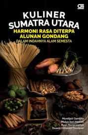

Makanan Khas di Indonesia

lustrasi Makanan Khas Nusantara (sumber: kabare)
Seperti yang sudah dijelaskan di awal bahwa keragaman ras dan suku bangsa Indonesia melahirkan berbagai bentuk keragaman budaya, salah satunya makanan khas daerah.
Sebagai negara kepulauan dengan tanahnya yang subur serta dapat menumbuhkan berbagai jenis tanaman, menjadikan Indonesia kaya akan rempah-rempah.
Dari situlah, Indonesia mampu menciptakan makanan khas dengan cita rasa rempah-rempah yang melekat di setiap hidangannya. Dengan demikian, Indonesia mampu menjadi salah satu negara dengan wisata kuliner yang diapresiasi oleh mancanegara.
Beberapa makanan khas daerah di Indonesia yang cukup terkenal, di antaranya.
Makanan Khas Pulau Sumatera
- Rendang (Padang, Sumatera Barat)
- Sate Padang (Sumatera Barat)
- Pempek (Palembang, Sumatera Selatan)
- Tekwan (Palembang, Sumatera Selatan)
- Ayam Pop (Sumatera Barat)
- Bika Ambon (Medan, Sumatera Utara)
- Kari atau Kare (Sumatera Utara)
- Mie Aceh (Aceh)
- Nasi Gurih (Aceh)
- Mie Jalak Sabang (Aceh)
- Tasak Telur (Aceh)
- Gulai Kambing khas Aceh (Aceh)
- Ayam Tangkap (Aceh)
Temukan berbagai kuiner khas Sumatra Utara yang sangat bervariasi pula pada buku Kuliner Sumatera Utara "Harmoni Rasa Diterpa Alunan Gondang" Dalam Indahnya Alam Semesta.

Makanan Khas Pulau Jawa
- Rawon (Jawa Timur)
- Lontong Balap (Jawa Timur)
- Rujak Cingur (Jawa Timur)
- Soto Lamongan (Jawa Timur)
- Bakso Malang (Jawa Timur)
- Soto Kudus (Jawa Tengah)
- Garang Asem (Jawa Tengah)
- Lumpia Semarang (Jawa Tengah)
- Gudeg (Yogyakarta)
- Cenil (Yogyakarta)
- Krecek (Yogyakarta)
- Mangut Lele (Yogyakarta)
- Nasi Timbel (Jawa Barat)
- Mie Kocok (Jawa Barat)
- Kupat Tahu (Jawa Barat)
- Karedok (Jawa Barat)
- Asinan Betawi (Jakarta)
- Lontong Sayur (Jakarta)
- Nasi Uduk (Jakarta)
- Kerak Telor (Jakarta)
Jakarta yang saat ini telah menjadi metropolitan juga memiliki berbagai warisan sejarah dan budaya Betawi dan salah satunya adalah kuliner seperti yang dapat kita lihat diatas. Temukan berbagai makanan asal Betawi lainnya pada buku Makanan Khas Betawi.
Makanan Khas Bali
- Bebek Betutu
- Nasi Jinggo
- Sate Lilit
- Sate Pentul
- Bebek Bengil
- Ayam Betutu
- Rujak Buleleng
- Siobak Khe Lok
- Nasi Campur Bali
- Ikan Asap Sambal Matah
- Rujak Kuah Pindang
Makanan Khas Pulau Kalimantan
- Soto Banjar (Kalimantan Selatan)
- Ikan Patin Baubar (Kalimantan Selatan)
- Ketupat Kandangan (Kalimantan Selatan)
- Iwak Pakasam (Kalimantan Selatan)
- Tumis Kapah (Kalimantan Utara)
- Ikan Asin Richa (Kalimantan Utara)
- Sate Ikan Pari (Kalimantan Utara)
- Kepiting Soka (Kalimantan Utara)
- Bubur Pedas (Kalimantan Barat)
- Mie Sagu (Kalimantan Barat)
- Kerupuk Basah (Kalimantan Barat)
- Asam Pedas Tempoyak (Kalimantan Barat)
- Nasi Kuning Ikan Haruan (Kalimantan Timur)
- Sate Payau (Kalimantan Timur)
- Ikan Jelawat (Kalimantan Tengah)
- Kalumpe (Kalimantan Tengah)
- Terong Mapui (Kalimantan Tengah)
Makanan Khas Pulau Sulawesi
- Coto Makassar (Sulawesi Selatan)
- Konro (Sulawesi Selatan)
- Pisang Ijo (Sulawesi Selatan)
- Bolu Peca' (Sulawesi Selatan)
- Nasi Jaha (Sulawesi Utara)
- Cakalang Fufu (Sulawesi Utara)
- Sambal Roa (Sulawesi Utara)
- Bubur Manado (Sulawesi Utara)
- Mie Cakalang (Sulawesi Utara)
- Toppa Ikan Tuna (Sulawesi Barat)
- Kue Cucur (Sulawesi Barat)
- Sambusa (Sulawesi Barat)
- Ikan Dole (Sulawesi Tenggara)
- Sate Gogos Pokea (Sulawesi Tenggara)
- Kabuto (Sulawesi Tenggara)
Makanan Khas Pulau Papua
- Papeda
- Kue Lontar
- Ikan Bakar Manokwari
- Sagu Lempeng
- Ikan Bungkus
- Udang Selingkuh
- Kue Bagea
- Sambal Colo-Colo